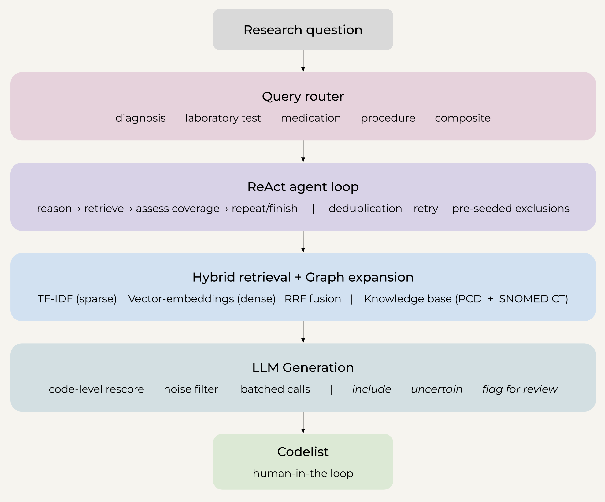
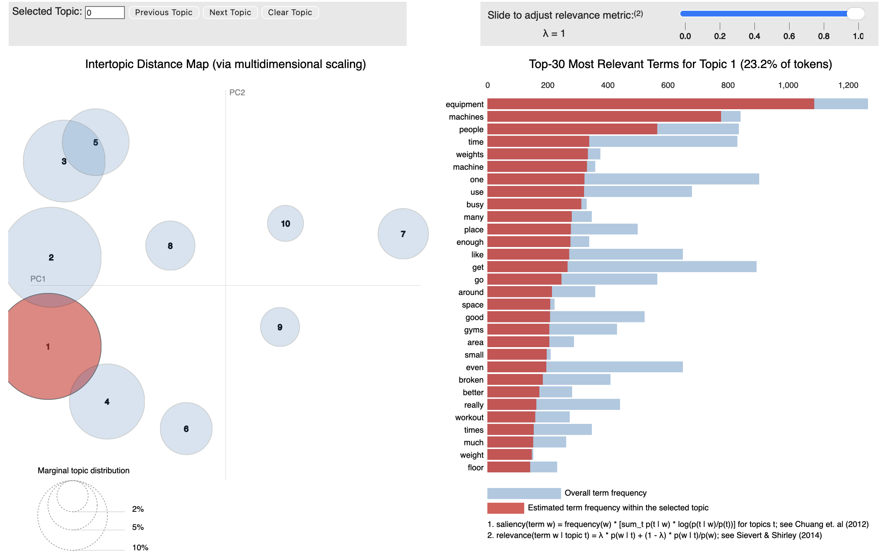
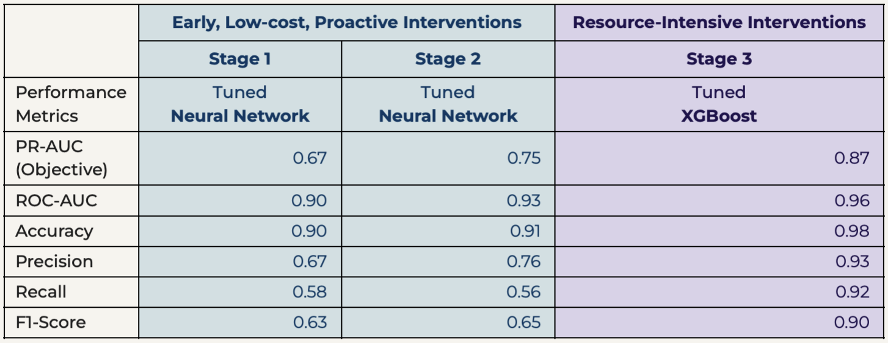
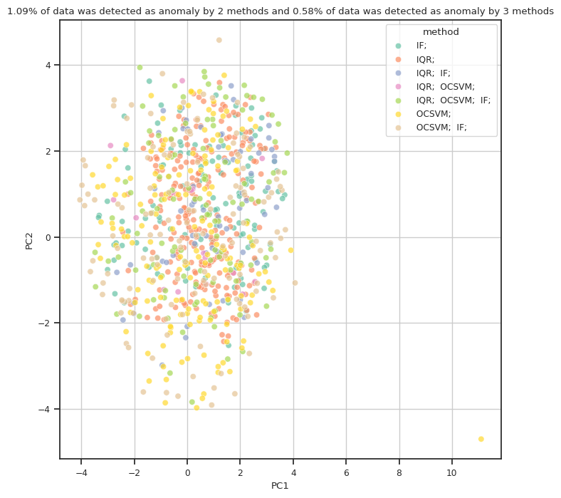
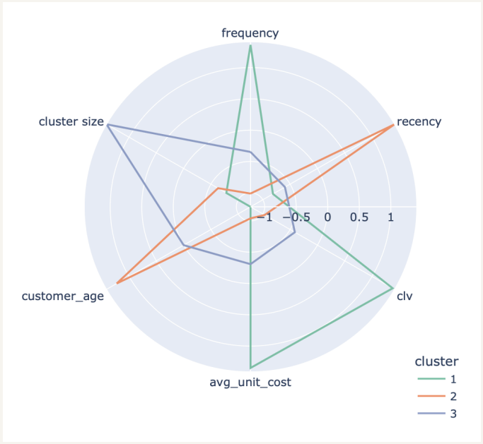
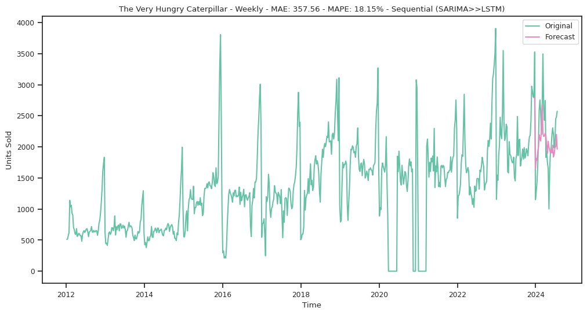
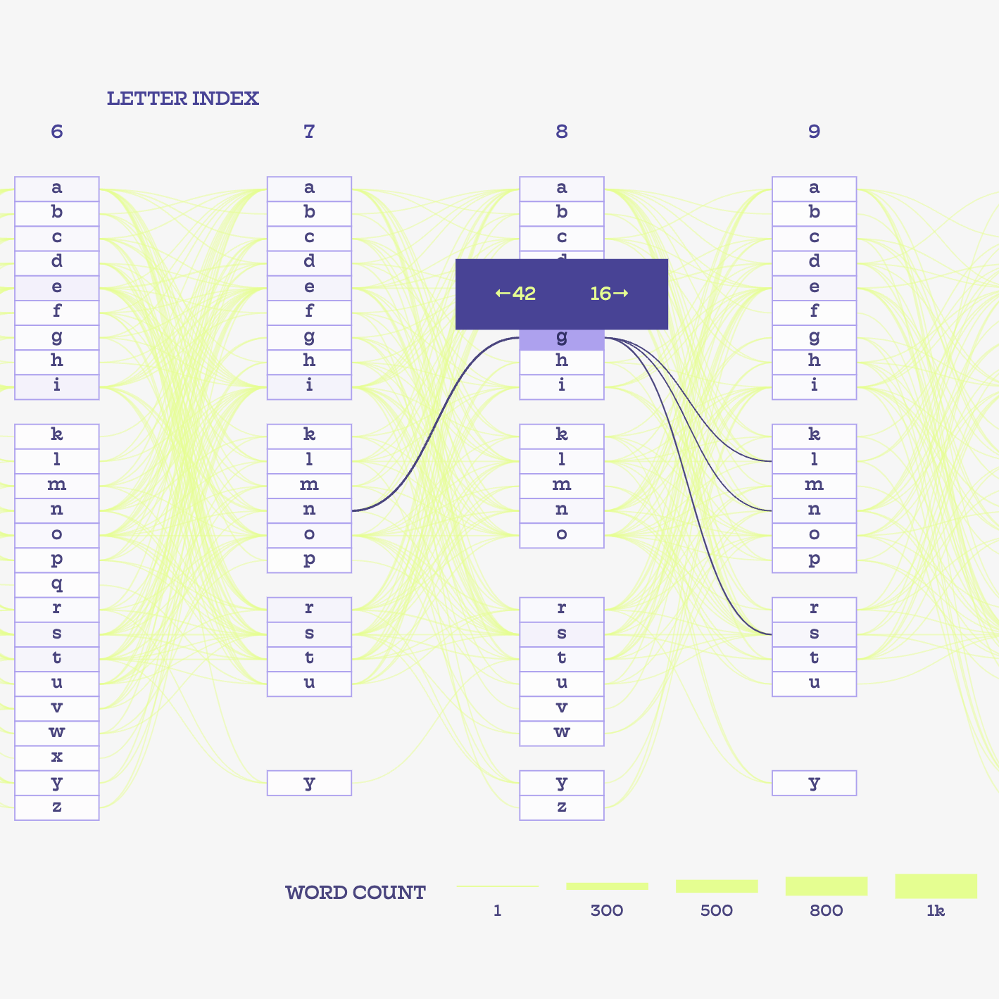

Darya Yarparvar
I work at the intersection of data science and the life sciences —building analysis that holds up scientifically and stays clear enough for the people who have to act on it.

The problem: clinical codelists are built by hand —slow, and easy to get wrong. The fix: an agentic RAG assistant. It routes the question, reasons in a loop, and searches PCD + SNOMED CT by keyword and meaning before an LLM drafts the codes —each with full traceability and auditability. Why it works: a clinician still checks every code, so it’s fast but stays safe.

The problem: research code rarely runs anywhere but the author’s laptop. The solution: ship the repurposing pipeline as an installable, CI-checked package. How: it ranks existing drugs for a disease. Why it matters: reproducible and deployable. Beyond a small k, recall@k is bounded not by search depth but by how completely each disease’s known drugs map onto its top associated targets.

The problem: far too many gym reviews to read by hand. The solution: let the models read them. How: BERTopic and LDA group the themes, while BERT emotion analysis scores the feeling. Why it matters: the noise becomes a ranked to-do list —broken, overcrowded equipment first, then staff and membership gripes.

The problem: flag students at risk of dropping out early enough to help —on very imbalanced data. The solution: stage the model. How: neural networks handle the weak early signals (stages 1 & 2), then XGBoost takes over once grades arrive (stage 3). Why staged: early means cheap, proactive help; later is surer but can be too late (PR-AUC 0.67 → 0.75 → 0.87).

The problem: catch a failing ship engine early, without drowning in false alarms. The solution: make three detectors agree. How: IQR, One-Class SVM and Isolation Forest each flag odd readings. Why it works: the ones caught by several methods are the real ones —just 1.09% (two methods), 0.58% (all three) —a short, trustworthy watchlist.

The problem: treating every customer the same wastes marketing. The solution: group them by behaviour. How: K-means and hierarchical clustering (with PCA / t-SNE) on recency, frequency, value and age. Why it matters: three clear segments emerge, each getting its own play to lift retention and profit.

The problem: forecast weekly book demand, spikes and all. The solution: SARIMA first, then an LSTM on top. How: SARIMA learns the season and trend; the LSTM mops up what’s left. Why the result matters: SARIMA alone is the most reliable (the data is mostly seasonal), the hybrid adds only a little —and neither can predict spikes driven by events outside the data.

A Sankey diagram to help you win —and stay one step ahead— in a game of Scrabble!
view it live